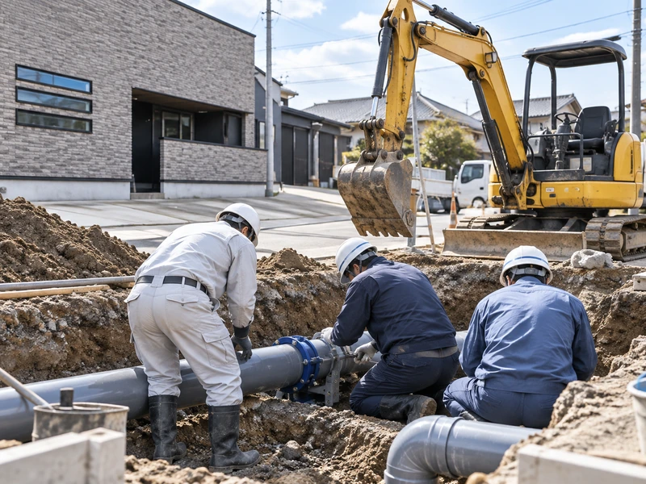
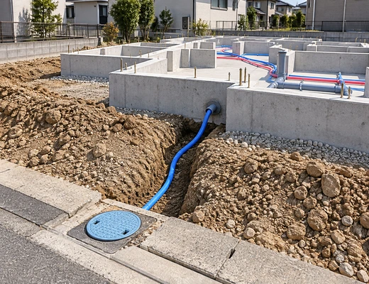
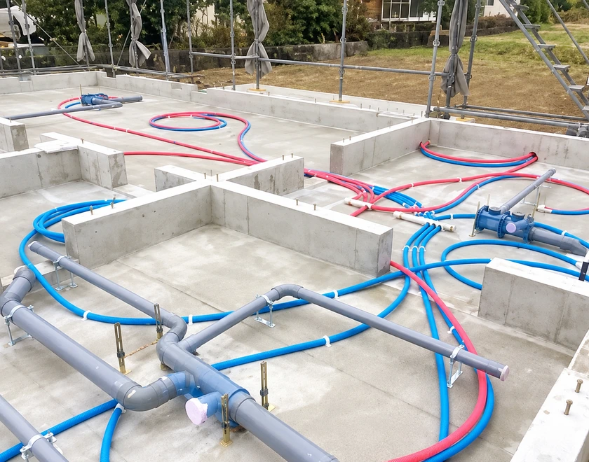
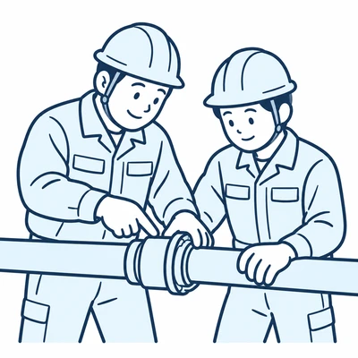
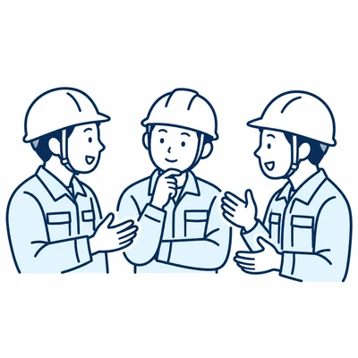
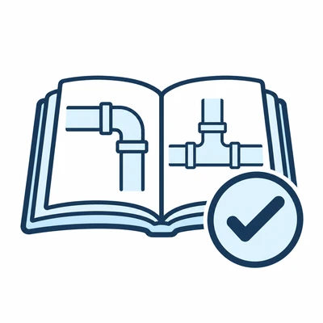
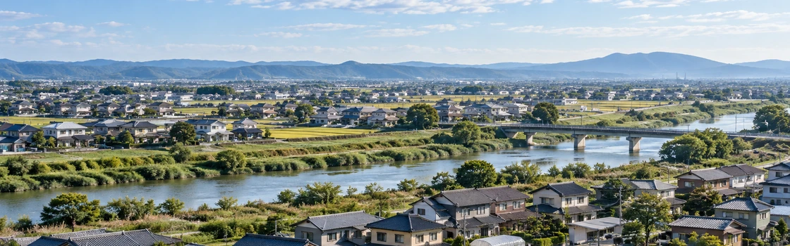
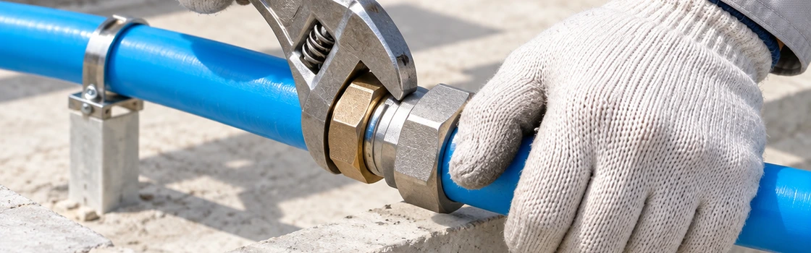

ライフラインを守る、
水道関連事業。
いつでも安心して
安全な水道水の供給のために。



道路から、宅地へ、家の中へ。
道路の下の配水管、宅地の給水管、家の基礎の中の給水と給湯の管。水道水が蛇口に届くまでの道を、私たちが埋めています。
四つの仕事
道路の下の水道管
津市などの公共工事で、配水管の布設や移設、下水道管の更生、公共下水道の工事をしています。
- 2022白山町山田野地内配水管布設工事
- 2022大谷町及び広明町地内配水管移設工事
- 2023大門地内下水道管更生工事
- 2024半田地内配水管布設工事
- 2024曽根南処理分区公共下水道工事
家の水道
大手ハウスメーカーと取引をしています。家の基礎の中や宅地の中に、水道の管を通します。
指定工事店
給水装置工事・排水設備工事の指定工事店として、各市町の名簿に載っています。
- 給水
- 津市・松阪市・玉城町・伊勢市
- 排水
- 津市・松阪市・玉城町・亀山市・伊賀市・名張市
会社
三重県知事許可 第016284号
土木、とび・土工、石、管、鋼構造物、舗装、しゅんせつ、塗装、水道施設、解体、建築
三重県版小規模事業所向け環境マネジメントシステム（M-EMS）ステップ1 2023年6月1日登録
地元で働き、私たちと一緒に
地元を守っていきませんか？
アットホームで居心地のよい会社です。熟練スタッフが丁寧に指導しチームワークを大切にしています。年齢、性別、国籍問わず一緒に頑張っていきましょう！

熟練スタッフが丁寧に指導

チームワークを大切に
年間休日105日（日・祝・隔週土曜・夏季・年末年始）

各種資格取得支援

保護者の方へ
「入社してよかった」と社員もそのご家族•御関係者の方も安心していただけるような会社を目指しております。弊社には入社した子を我が子のように面倒をみる文化があり、上司や先輩社員は社会人として一人前になった姿を思い描きながら育てていきます。お子様が成長する姿を見守っていきたいとおもっております。

働く条件
| 勤務時間 | 8:00〜17:00 |
|---|---|
| 休日 | 日・祝・隔週土曜日・夏季休暇・年末年始（年間休日105日） |
| 初任給 | 高卒 185,000円 |
| 昇給 | 年1回 |
| 賞与 | 年2回 |
| 社会保険 | 雇用・労災・健康・厚生年金 |
| 福利厚生 | 退職金共済制度・制服貸与・各種資格取得支援 |